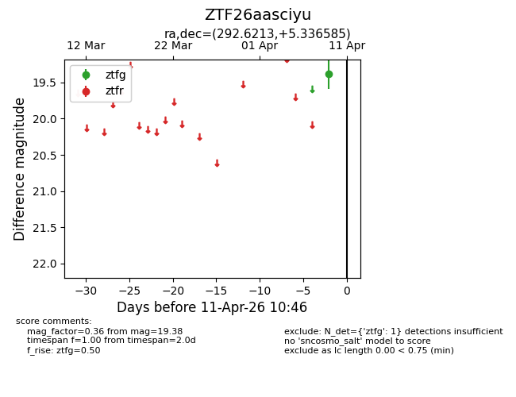
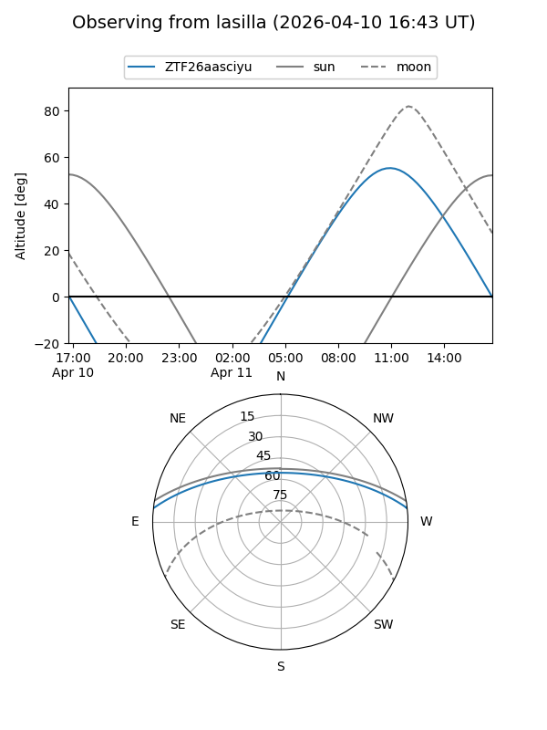
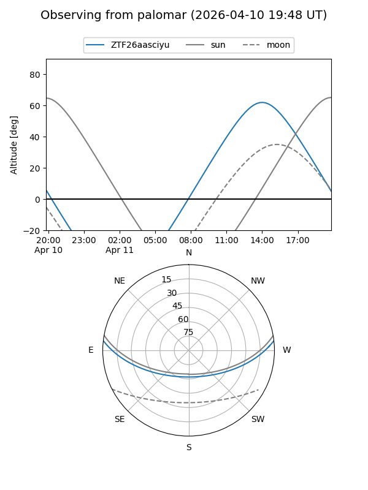

ZTF26aasciyu
Target ZTF26aasciyu at 2026-04-11 10:54
Aliases and brokers:
FINK: link
Lasair: link
ALeRCE: link
alt names
ZTF26aasciyu (ztf,fink_ztf)
Coordinates:
equatorial (ra, dec) = 292.6213,+5.33658
equatorial (HMS+DMS) = 19:30:29.10,+05:20:11.70
galactic (l, b) = (42.1788,-6.19058)
Flags:
Photometry:
last ztfg=19.38
1 ztfg detections
Lightcurve

Visibility


Additional plots